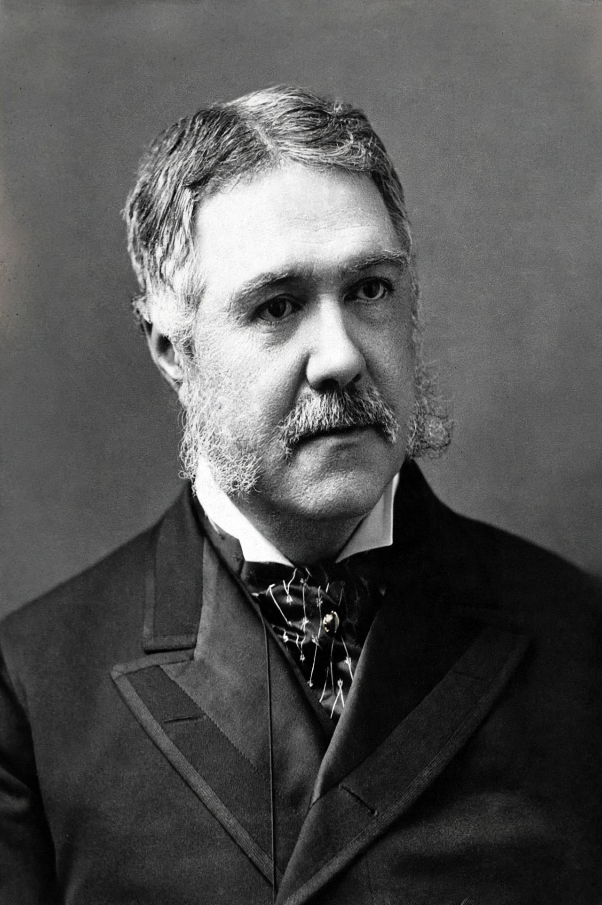

| Chester Alan Arthur | |
|---|---|
| Born | October 5, 1829, Fairfield, Vermont, U.S. |
| Died | November 18, 1886 (aged 57), New York City, U.S. |
| Office | 21st President of the United States |
| Term | September 19, 1881 – March 4, 1885 |
| Previous office | 20th Vice President of the United States (1881) |
| Party | Republican |
| Spouse | Ellen Herndon Arthur (died 1880) |

Chester Alan Arthur (October 5, 1829 – November 18, 1886) was the 21st president of the United States, serving from 1881 to 1885. A Republican lawyer from New York and a protégé of machine boss Roscoe Conkling, he succeeded to the presidency upon the assassination of President James A. Garfield. To the surprise of contemporaries, Arthur championed civil service reform and broke with his patron's Stalwart faction.
Arthur was born in Fairfield, Vermont, the son of an Irish-born Baptist abolitionist preacher. He graduated from Union College in 1848, taught school, and read law in New York City, where he joined the firm of Erastus D. Culver and worked on civil rights cases, including the Lemmon slave case. During the Civil War he served as quartermaster general of New York, efficiently supplying the state's troops.
After the war Arthur rose within Conkling's Republican machine. President Ulysses S. Grant appointed him Collector of the Port of New York in 1871, the most lucrative patronage post in the federal government, controlling some thousand customs employees. President Rutherford B. Hayes, investigating corruption and political assessments on officeholders, removed Arthur in 1878. In 1880 the Republican convention, needing a Stalwart to balance the ticket, nominated Arthur for vice president alongside Garfield, a Half-Breed.
Arthur took the oath of office in his Manhattan home in the early hours of September 20, 1881, after Garfield's death, repeating it formally in Washington two days later. Widowed before taking office, he brought elegance to the White House, refurbishing it and selling off wagonloads of accumulated furnishings.
His signature achievement was signing the Pendleton Civil Service Reform Act (1883), which created a bipartisan Civil Service Commission and required that a growing class of federal jobs be filled by competitive examination rather than political connection. He enforced the act vigorously, alienating Conkling's Stalwarts and delighting reformers who had expected the opposite — the New York machine man, as Mark Twain quipped, had become a president it would be hard to better.
Arthur also signed the Chinese Exclusion Act of 1882, though he vetoed an earlier, harsher version that barred Chinese immigration for twenty years and denied naturalization; the enacted law imposed a ten-year suspension. He vetoed pork-barrel rivers and harbors legislation (Congress overrode him), pursued naval modernization — laying the keels of the steel "ABCD" ships that began the modern U.S. Navy — and prosecuted the Star Route postal frauds.
Arthur learned early in his presidency that he suffered from Bright's disease, a fatal kidney ailment, which he concealed from the public; his energy and travel were curtailed. He sought the Republican nomination in 1884 only half-heartedly, and the convention chose James G. Blaine. He returned to his New York law practice and died on November 18, 1886, of a cerebral hemorrhage. He is buried beside his wife in Albany Rural Cemetery.
Historians generally credit Arthur with an honest, competent administration that rose above its machine origins, administering the new civil service system faithfully and restoring public confidence after Garfield's murder. On leaving office he remarked, in a widely quoted reflection, that he might be president of the United States, but his presidency had begun in a way no one could wish.